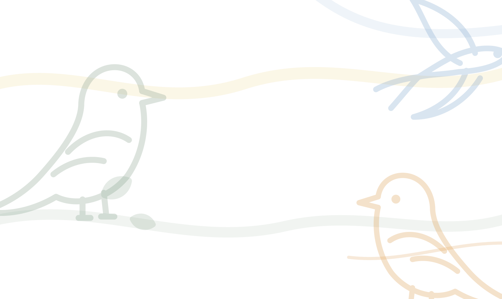

AlaViva — cada ave, una segunda oportunidad
¿Has encontrado un ave caída o herida?
Te ayudamos a decidir qué hacer en los primeros minutos y cuándo llevarla a un centro de recuperación (CRAS). Gratis, en español y pensado para usarlo con el ave delante.
Un ave silvestre no es una mascota. En España, la fauna silvestre está protegida por ley: lo habitual es que un particular no pueda quedarse con un ave para criarla en casa. AlaViva te ayuda con los primeros cuidados mientras contactas con un centro autorizado (CRAS) — si el ave necesita ayuda, la meta es entregarla a profesionales, no sustituirlos.
Lávate las manos antes y después de tocar el ave, a ser posible con guantes. Las aves silvestres pueden transportar parásitos o enfermedades transmisibles a personas. Evita el contacto con la cara y no comas mientras la manipulas.
Cómo funciona
Tres pasos, en este orden, porque cada uno depende del anterior.
Comprueba si necesita ayuda
Muchos "rescates" son innecesarios: un volantón sano en el suelo sigue siendo alimentado por sus padres. El checklist te lo aclara en un minuto.
Identifica la especie
Sube una foto o consulta la guía de especies para saber qué es, qué come y cómo tratarla mientras la trasladas.
Encuentra tu CRAS
Localiza en el mapa el centro de recuperación de tu comunidad y llévale el ave, con los cuidados básicos para el trayecto.
Así se ve una guía
Un ejemplo de ficha — hay 50 especies reales ya disponibles en la guía completa.
Jilguero europeo
Carduelis carduelis